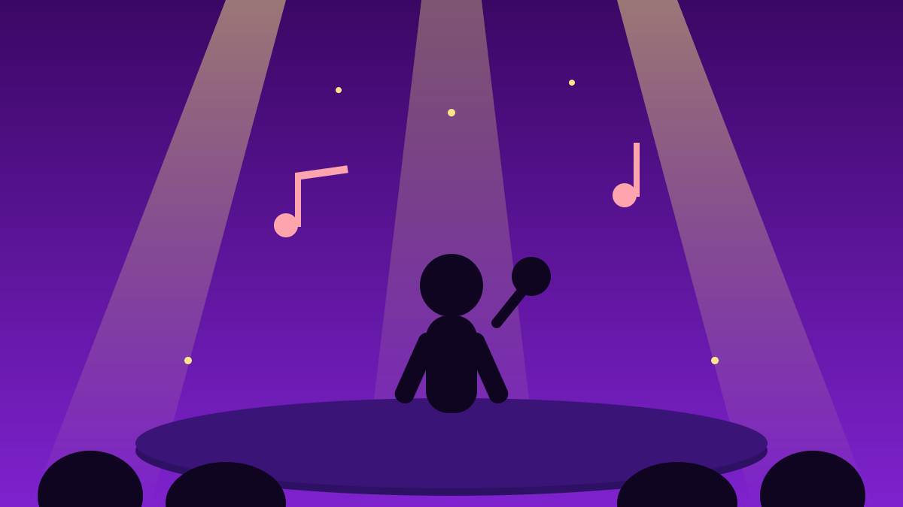

1 / 6

🎬 HIBURAN
Reuni yang Ditunggu Bertahun-tahun Akhirnya Kejadian
Momo naik panggung bareng Geisha lagi di Synchronize Fest — dan satu kalimat Roby bikin se-venue mewek. Geser buat spill lengkapnya →
2 / 6
🎤
Jumat malam, 16 Oktober, di Kemayoran
Geisha tampil di hari pertama Synchronize Fest 2026 di Gambir Expo Kemayoran, Jakarta, dalam pertunjukan bertajuk “A Retrospective Journey”.
Momen ini sekaligus jadi perayaan 23 tahun perjalanan Geisha di industri musik Indonesia.
3 / 6
🌟
Dua era, satu panggung
Penampilan dibuka vokalis Geisha saat ini, Regina Poetiray, lewat lagu “Tak Kan Pernah Ada”, dilanjut “Cukup Tak Lagi”, “Pergi Saja”, “Kering Air Mataku”, dan “Cinta dan Benci”.
Lalu Momo — mantan vokalis yang membesarkan nama Geisha — naik ke panggung dan bernyanyi bersama Regina dan para personel: Nard, Roby, Aan, Dhan, dan Alif.
4 / 6
🎶
Setlist nostalgia-nya full
Bareng Momo, Geisha membawakan “Cinta dan Benci” plus lagu-lagu yang nempel di kepala anak 2000-an: “Selalu Salah”, “Jika Cinta Dia”, dan “Lumpuhkan Ingatan”.
Satu venue ikut nyanyi — lagu-lagu ini soalnya soundtrack masa sekolah dan patah hati satu generasi.
5 / 6
💬
Kata mereka dari atas panggung
Momo mengaku terharu sampai harus menahan air mata: “Kalau nangis takutnya, lagu berikutnya saya mewek terus nanti bengong nggak nyanyi-nyanyi. Tapi yang pasti, malam ini saya terharu.”
Roby menyambutnya dengan hangat: “Selamat pulang kembali, Momo.” Regina pun bilang, dulu ia hanya nonton Geisha dari layar TV waktu masih sekolah — sekarang ia berbagi panggung dengan mereka.
6 / 6
🤔
Efeknya ke lo apa?
Reuni ini disebut sudah diupayakan tim Synchronize Fest selama beberapa tahun sebelum akhirnya kejadian. Pesannya sederhana tapi nampol, kata Momo: tidak semua cerita hidup harus dilihat siapa yang salah dan siapa yang benar.
Buat weekend ini: putar lagi playlist Geisha, kirim lagu “Lumpuhkan Ingatan” ke orang yang dulu pernah lo ajak karaokean bareng. Siapa tahu jadi alasan buat baikan. 🎵